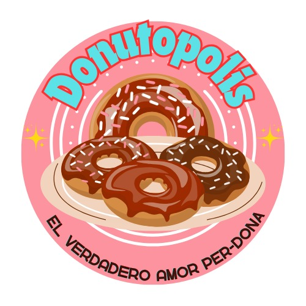

Donatopolis

Donatopolis del INSIBO Santo Tomás es una empresa local enfocada en la creación de donas deliciosas y originales, situada dentro del entorno dinámico del Instituto Insibo Santo Tomás. Aquí, se combinan ingredientes frescos y creativos para ofrecer una experiencia dulce única a la comunidad estudiantil y visitantes. Donatopolis busca ser más que una simple tienda de donas, queriendo convertirse en un punto de encuentro para quienes desean disfrutar de productos de calidad, en un ambiente cómodo y acogedor.
Además, el compromiso con el servicio al cliente y el detalle en la presentación son fundamentales para brindar una experiencia completa a quienes nos visitan.
Nuestra misión es hacer que cada dona sea un momento especial, logrando que el público de INSIBO Santo Tomás nos elija no solo por la calidad del producto, sino también por la calidez del lugar.
Ingredientes
Para las donas:
-Harina -Huevo -Leche -Canela -Aceite -Sal -Esencia de vainilla -Polvo para hornear
Para su presentacion:
-Chocolate -Mani -Chispita de colores
Menu:
4 minidonas = 1 Dolar 1 dona = $0.25